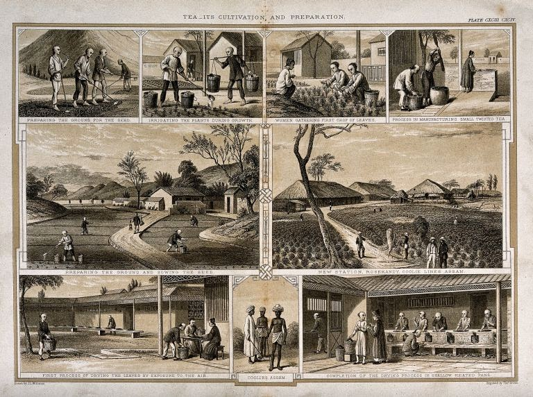
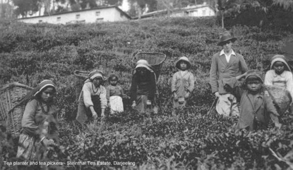

ORIGIN
The credit for creating India's vast tea empire goes to the British, who discovered tea in India and cultivated and consumed it in enormous quantities. Initially they used to consume tea which they bought from China. By 1750, they were importing millions of pounds of tea every year from China and had to pay for it in silver. In order to break the Chinese monopoly in tea, the British, using Chinese seeds, plus Chinese planting and cultivating techniques, kick-started the tea industry by offering lands in Assam to any European who agreed to cultivate tea for export. Thus the British introduced tea into India for the first time. During this time many British people moved over to India to settle down here to get involved in tea trade, etc.
For more than thousand years tea was cultivated and consumed in eastern and northern regions of India by tribes in the hilly areas. The Singpho and the Khamti tribes of Assam, where the Camellia Sinensis plant (native to India) grew, have been consuming tea since the 12th century. The British, on their trips through the hilly places, saw the local tribes drinking a sort of black drink which was a type of tea brewed from local plants and since it tasted like tea they took keen interest to develop it. Large scale cultivation and commercial production began only with the arrival of British company.

THE NATIVE TEA STORY
The first tea plantation in India is related to a Scottish adventurer Robert Bruce who visited India in 1823 for trading purposes.While exploring Rangpur, he encountered wild tea bushes growing near the area. When he made a further enquiry on the matter, an Indian nobleman Maniram Dewan introduced Bruce to the Singpho people who were drinking something very similar to tea. He met chief of the local tribe Singpho and collected a sample and found it to be similar to the tea from China.
After research, it was found to be tea but a variety different from the Chinese plant and was named Assamica. It was good time for the British to start producing tea within the British colonies, including India, Sri Lanka to break the Chinese monopoly over global tea trade due to their rising conflict of interests. The early tea cultivation began with seedlings germinated from the seeds procured from China. Initially these Chinese plants were unsuitable to Indian terroir. After so many trials and extended dedicated efforts, the first British-led commercial tea plantation in India was established in 1837 in Chabua in Upper Assam. In 1840, plantation was also experimented in Darjeeling which was initiated by Archibald Campbell first superintendent of Darjeeling. the first commercial plantation was established with the setting up of Tukvar Tea Estate in Darjeeling in 1850.

Modern Tea in India
The tea industry did not stop when the British left India. In fact, the tea industry has been growing rapidly. Assam has over 43,293 tea gardens, Nilgiris has over 62,213 gardens while Darjeeling has 85 tea gardens. In order to ensure the genuine supply of tea, a compulsory system of certifying the authenticity of these teas was incorporated into the Tea Act of 1953. ‘Darjeeling’, ‘Darjeeling logo’, ‘Assam logo’ and ‘Nilgiri logo’ are registered under the Geographical Indications of Goods Act of 1999.
Today tea is the fuel that drives the majority of India’s billion-plus inhabitants. The country is not only the world’s second-largest tea grower, but also has the largest tea-drinking population in the world. In fact, about 81% of the tea grown in the country is consumed domestically.
What makes the tea scene in India really interesting to observe is the variance of consumption patterns in terms of habits and quantity.Tea drinking itself has evolved in many ways, with every region of this country making their own chai variants. The recipe for Chai varies across, towns, families, cultures and continents. However, the traditional spiced tea ingredients included black tea and spices like cardamom, cinnamon, ginger, cloves, and black pepper. The Indians brewed spiced tea with milk and sweetened it with honey or sugar.